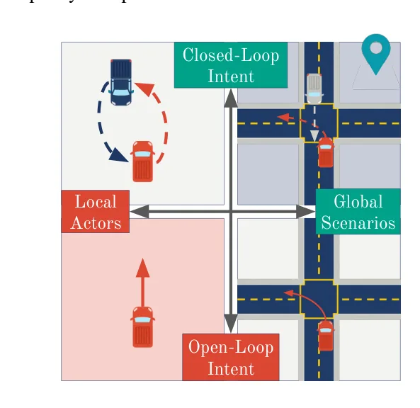
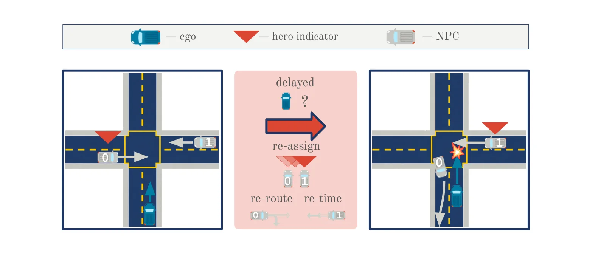
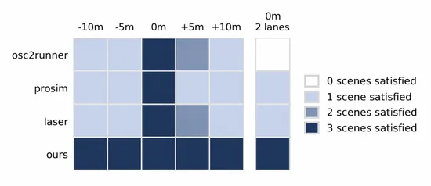

O Problema da Deriva em Loop Fechado
A indústria de veículos autônomos depende massivamente de testes baseados em cenários dentro de simuladores. A premissa é clara: é impossível, perigoso e caro reproduzir todos os eventos de cauda longa do mundo real na estrada. Portanto, a simulação se torna o campo de treinamento e validação principal para expor a política de direção do veículo (conhecida como 'ego policy') a situações críticas de segurança.
No entanto, existe uma falha estrutural nos métodos tradicionais de teste. A maioria dos cenários é roteirizada (scripted) antes da execução. Isso significa que as rotas, velocidades e comportamentos dos outros veículos (atores) são fixos e predeterminados. O problema surge quando a política do ego, ao interagir em loop fechado, responde de maneira diferente da esperada. Se o ego chegar à interseção mais cedo ou mais devagar, o ator fixo pode já ter passado ou estar longe demais, e o conflito crítico planejado nunca ocorre.
Os autores chamam isso de 'closed-loop drift' (deriva em loop fechado). A intenção do teste (test intent) — por exemplo, forçar o ego a frear bruscamente ou hesitar em uma virada à esquerda — se perde porque o cenário não se adapta à dinâmica real da política sendo testada. Cenários fixos são, por definição, abertos (open-loop) em relação ao comportamento do ego, o que os torna ferramentas imprecisas para avaliação rigorosa.
Abordagens baseadas em dados tentam criar tráfego realista, mas tendem a gerar comportamentos nominais e dentro da distribuição esperada, o que contradiz a necessidade de gerar eventos raros e críticos. Outras tentativas de otimização multobjetivo ainda mantêm os atores presos às especificações iniciais, sem capacidade de adaptação online. A conclusão dos autores é direta: se a política do ego se comporta dinamicamente, o cenário também precisa se comportar dinamicamente para preservar a intenção do teste.

A Ideia: Orquestração de Cenários
O paper introduz um 'orquestrador de cenários' (scenario orchestrator). Diferente de scripts estáticos ou agentes aprendidos que apenas reagem localmente, este orquestrador monitora continuamente o estado conjunto do tráfego. Seu objetivo é garantir que a intenção do cenário seja realizada, ajustando os atores não-ego (chamados de 'ado actors') em tempo real.
As intervenções possíveis são três: retemporização (ajustar quando o ator chega ao ponto de conflito), reroteirização (mudar a rota do ator) e reatribuição de papel (trocar qual ator é o 'herói' responsável por criar o conflito). O orquestrador não controla o ego; ele controla o ambiente ao redor do ego para forçar a interação desejada.
Em cada passo temporal, o orquestrador resolve um problema de otimização restrita. A função de custo minimiza a intervenção necessária (para não tornar o cenário artificial demais), enquanto as restrições garantem que a intenção do cenário seja mantida e que o tráfego permaneça fisicamente viável. Isso permite que o teste seja julgado em duas etapas distintas: primeiro, se a interação crítica realmente ocorreu (realização do cenário), e segundo, como a política do ego respondeu a essa interação (falha ou sucesso da política).
Mecanismo: Otimização Restrita e Diretivas
O cerne técnico do método é a formulação do problema como uma otimização com horizonte recedente. O objetivo é encontrar parâmetros de decisão (θ) que minimizem um custo de intervenção J(θ), sujeito a uma indicação de intenção I(θ) que deve ser verdadeira (igual a 1). Isso garante que, a cada passo, o sistema busque a menor mudança possível nos atores para manter o cenário válido.
Para definir o que é um 'cenário válido', os autores estabelecem quatro diretivas (restrições) principais. A Diretiva D1 verifica se algum ator colide com o ego dentro de um horizonte temporal H. A Diretiva D2 assegura que o 'ator herói' (aquele designado para criar o conflito) possa fisicamente alcançar o ponto de conflito dado a trajetória prevista do ego. A Diretiva D3 verifica se atores de fundo (background) colidem entre si ou bloqueiam o caminho do herói ou do ego antes do conflito principal. A Diretiva D4 garante que atores de fundo não colidam uns com os outros, preservando a realismo geral do tráfego.
A representação do cenário é baseada em sequências de manobras discretas (virar à esquerda, direita, mudar de faixa) com parâmetros contínuos como velocidade. O orquestrador designa um 'herói' entre os atores não-ego — geralmente aquele mais próximo do ponto de conflito ou em posição favorável. Se o herói original se tornar incapaz de realizar a interação devido ao comportamento do ego, o orquestrador pode reatribuir esse papel a outro ator mais adequado, resolvendo o problema de deriva em tempo real.

Avaliação Experimental no CARLA
Os autores avaliaram o método no simulador CARLA, utilizando seis famílias de cenários derivados de fontes autoritativas: semáforo vermelho, virada à esquerda, virada à direita, corte de faixa (cut-in), frenagem brusca e ultrapassagem. Esses cenários cobrem tanto interseções quanto rodovias multilane.
Seis políticas de direção diferentes foram testadas: três modelos clássicos baseados em física (IDM-Assertive, IDM-Basic, IDM-Conservative) e três métodos de estado da arte aprendidos (PlanT 2.0, TFv6, SimLingo). Isso permitiu avaliar a robustez do orquestrador contra tanto comportamentos determinísticos quanto políticas neurais complexas.
O método foi comparado contra três bases (baselines): ProSim (atores aprendidos reativos, mas em loop aberto), LASER (orquestração baseada em LLM de scripts) e OSC2Runner (execução baseada em gatilhos de script). A matriz de avaliação resultou em 144 combinações de cenários, políticas e métodos, fornecendo uma visão abrangente de desempenho.
As métricas principais foram a taxa de realização do cenário (se a interação crítica ocorreu) e a taxa de falha da política (se o ego falhou ao lidar com a interação). É crucial notar que a realização do cenário é medida independentemente da resposta do ego. Isso permite distinguir se um teste falhou porque o cenário não se realizou (problema do orquestrador) ou porque o ego simplesmente não conseguiu lidar com o cenário (problema da política).
Resultados: Superioridade em Realização de Cenários
Os resultados mostram que o método proposto realiza os cenários alvo com muito mais consistência do que as abordagens tradicionais. Em todas as famílias de cenários testadas, o orquestrador alcançou a taxa máxima de sucesso na realização da interação, enquanto os métodos baseados em scripts (OSC2Runner) e atores aprendidos (ProSim) tiveram taxas significativamente menores.
Isso ocorre porque scripts fixos não conseguem compensar variações nas condições iniciais ou no comportamento do ego. Se o ego chega atrasado, o script não ajusta o tempo do outro veículo. Já o orquestrador, ao resolver a otimização em cada passo, recalcula as trajetórias para garantir que o conflito aconteça no momento certo.
Quanto à capacidade de estressar as políticas, o método também se saiu bem. Ao garantir que o cenário crítico realmente ocorra, ele expõe as políticas a situações de falha que seriam perdidas em testes com cenários fixos. Políticas aprendidas como TFv6 e SimLingo, que podem ser mais robustas a ruídos, ainda assim foram testadas sob condições controladas de interação crítica, permitindo uma avaliação mais justa de suas capacidades de segurança.
O gráfico de barras demonstrou que, mesmo quando variadas as condições iniciais (offsets de spawn), o método proposto manteve a taxa de sucesso alta, enquanto as outras metodologias apresentaram quedas drásticas. Isso confirma a robustez da abordagem de orquestração contínua frente a perturbações.

Limitações e Trabalho Futuro
Apesar dos resultados promissores, os autores destacam limitações importantes. O design atual depende de comportamentos de tráfego especificados manualmente. Por exemplo, a seleção do 'ator herói' e as regras de prioridade são definidas por heurísticas manuais. Isso pode não escalar bem para cenários muito complexos e abertos, onde a lógica manual se torna intratável.
Além disso, a integração de modelos de atores baseados em dados (aprendidos) dentro das restrições de otimização do orquestrador é deixada como trabalho futuro. Atualmente, o orquestrador ajusta parâmetros contínuos (velocidade, tempo) de manobras discretas pré-definidas, mas não gera novas manobras complexas a partir de zero usando redes neurais.
Outra limitação é a computação. Resolver um problema de otimização restrita em cada passo temporal exige recursos. Embora o horizonte recedente ajude a limitar a complexidade, a escalabilidade para simulações com centenas de veículos e interações simultâneas não foi totalmente explorada neste estudo.
Os autores também mencionam que o foco principal foi a avaliação de políticas, não a geração de dados para treinamento. Embora o método possa gerar dados de alta qualidade para treinar políticas mais seguras, seu uso principal neste paper é como ferramenta de teste e validação.
Conclusão
O paper apresenta uma solução elegante para um problema prático e persistente na avaliação de veículos autônomos: a deriva de cenários em loop fechado. Ao introduzir um orquestrador que ajusta atores não-ego em tempo real através de otimização restrita, os autores garantem que a intenção do teste seja preservada, independentemente de como a política do ego reage.
Os resultados no CARLA demonstram que essa abordagem supera métodos baseados em scripts e atores reativos aprendidos, oferecendo uma ferramenta mais confiável para estressar e avaliar políticas de direção. A distinção clara entre realização de cenário e resposta da política oferece uma métrica de avaliação mais justa e informativa.
Embora dependa de especificações manuais que podem não escalar infinitamente, a metodologia estabelece um novo padrão para testes de segurança em simulação. Para pesquisadores e engenheiros de direção autônoma, a ideia de orquestrar o ambiente dinamicamente para forçar interações críticas é um passo significativo em direção a avaliações de segurança mais rigorosas e reproduzíveis.
O que fica
- Cenários pré-roteirizados falham em loop fechado porque a política do ego pode chegar tarde ou rápido demais, perdendo o conflito planejado.
- O orquestrador monitora o estado do tráfego e ajusta atores não-ego (retemporização, reroteirização) via otimização restrita.
- Avaliação separa 'realização do cenário' de 'falha da política', permitindo testar se a interação ocorreu antes de julgar a resposta.
- Método supera bases de cenários fixos e atores reativos aprendidos no CARLA, mas depende de comportamentos de tráfego manuais.
Paper original: Scenario Orchestration for Closed-loop Policy Evaluation of Autonomous Driving
Comentários
Nenhum comentário ainda. Seja o primeiro.